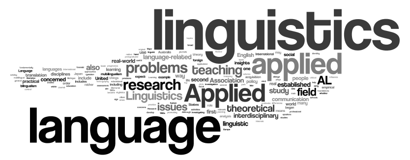

01 Home
언어 자료, 이론언어학, 수어와 언어 양식을 차례로 다루는 작은 포럼입니다. 발표는 6개, 전체 일정은 오후 2시부터 5시 55분까지입니다.

언어 자료, 이론언어학, 수어와 언어 양식을 차례로 다루는 작은 포럼입니다. 발표는 6개, 전체 일정은 오후 2시부터 5시 55분까지입니다.

참가 유형에 따라 아래 금액으로 운영됩니다. 납부와 비대면 접속 안내는 신청자에게 별도로 전달됩니다.
현장 참석 성인 참가자 기준입니다.
현장 참석 미성년자 참가자 기준입니다.
온라인으로 참여하는 참가자 기준입니다.
현장 입장은 오후 1시 50분부터 가능합니다.
행사장은 강남역 인근의 망고모임공간입니다.
서울특별시 서초구 서초대로77길 9
9층 망고모임공간

assets/mango-location-map.jpg를 불러옵니다.각 발표는 25분으로 진행합니다.
질의응답은 각 부가 끝난 뒤 15분 동안 종합적으로 진행합니다.
1부와 2부 종료 후 각각 15분의 휴식 시간이 있습니다.
1부는 개별 언어 자료와 언어 기술, 2부는 이론언어학, 3부는 수어와 언어 양식을 다룹니다.